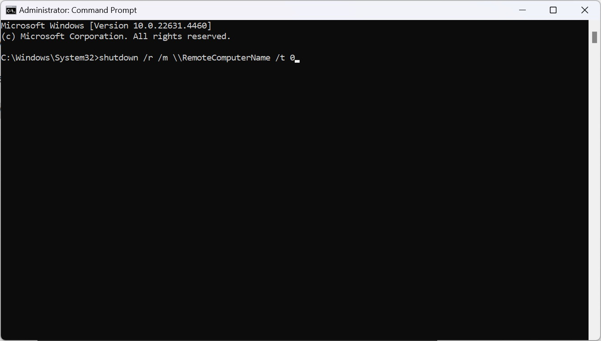

How to Remotely Reboot Unresponsive Computers: The Ultimate Guide
A frozen or unresponsive computer can be frustrating, especially when you’re not physically present to fix it. Whether you’re managing IT support, accessing a work computer remotely, or assisting a friend, knowing how to remotely reboot unresponsive computers is essential.
Fortunately, there are several reliable methods to restart a computer remotely, ensuring minimal downtime and uninterrupted workflow. In this guide, we will explore three simple yet effective methods to remotely reboot a frozen system:
- Using UltraViewer – A remote desktop software for easy access and control.
- Using Command Prompt (CMD) – A built-in Windows command for remote shutdown and restart.
- Using Remote Desktop Protocol (RDP) – A native Windows feature for full remote access.
By following these step-by-step instructions, you’ll be able to regain control of an unresponsive computer quickly and efficiently.
How to Remotely Reboot an Unresponsive Computer Using UltraViewer
Why Choose UltraViewer?

UltraViewer is an excellent choice for remotely rebooting a computer because it provides a user-friendly interface, secure connections, and real-time control. It allows you to access another computer remotely, troubleshoot issues, and restart it without hassle.
Step-by-Step Guide to Restart a Computer with UltraViewer
Step 1: Install and Set Up UltraViewer
- Download and install UltraViewer on both the local and remote computers.
- Launch the software and note down the Partner ID and Password displayed on the remote computer.
- On the local computer, enter the remote computer’s Partner ID and click "Connect to partner."
Step 2: Remotely Restart the Unresponsive Computer
- Once connected, you will see the remote desktop on your screen.
- Click the Start Menu on the remote PC.
- Select the Power Icon, then click Restart to reboot the computer.
For a detailed walkthrough, visit the UltraViewer guide.
If the remote computer becomes unresponsive after rebooting, reconnect to UltraViewer once it restarts.
Restarting a Remote Computer via Command Prompt (CMD)
Why Use CMD for Remote Reboot?
Command Prompt (CMD) is a built-in Windows tool that allows users to send remote commands to another computer on the same network. It’s a fast and effective solution if you have the proper permissions.
Step-by-Step Guide to Restart a Computer Using CMD
Step 1: Enable Remote Commands on the Target Computer
Before running the remote reboot command, ensure that:
- File and printer sharing is enabled on the remote computer.
- The firewall allows remote shutdown commands.
- You have administrator access on the remote machine.
Step 2: Execute the Remote Shutdown Command

-
On your local computer, open Command Prompt as an administrator.
-
Type the following command and press Enter:
Replace "RemoteComputerName" with the actual network name or IP address of the remote PC. The "/r" switch forces a restart, and "/t 0" sets the restart timer to zero (immediate restart).shutdown /r /m \\\\RemoteComputerName /t 0 -
If everything is configured correctly, the remote computer will restart instantly.
If the command fails, verify that the remote computer’s firewall and network permissions allow remote commands.
Rebooting a Remote PC with Remote Desktop Protocol (RDP)
Why Use Remote Desktop Protocol (RDP)?
Remote Desktop Protocol (RDP) is a built-in Windows feature that provides full access to another computer. Unlike CMD, which only sends commands, RDP allows complete control over the remote system.
Step-by-Step Guide to Restart a Computer Using RDP
Step 1: Enable Remote Desktop on Remote Computer
- On the remote computer, go to Settings > System > Remote Desktop.
- Toggle "Enable Remote Desktop" on.
- Note down the computer’s name or IP address.
Step 2: Connect to the Remote Computer via RDP
- On your local PC, press Windows + R, type
"mstsc", and hit Enter. - In the Remote Desktop Connection window, enter the remote PC’s name or IP address and click Connect.
- Enter your credentials and sign in to the remote computer.
Step 3: Restart the Remote Computer
- Once connected, click the Start Menu on the remote PC.
- Select the Power Icon and click Restart.
- Wait for the reboot to complete, then reconnect if necessary.
Alternative RDP Reboot Method (If Start Menu is Unresponsive)
If the remote PC is frozen and the Start Menu doesn’t work, use Task Manager:
- Press Ctrl + Alt + End on your keyboard.
- Click Sign Out and wait for the system to log off.
- Reconnect via RDP and try restarting again.
Conclusion
Knowing how to remotely reboot unresponsive computers is essential for IT professionals, remote workers, and tech support teams. Whether you use UltraViewer, Command Prompt (CMD), or Remote Desktop Protocol (RDP), each method provides a unique way to restart a frozen system efficiently.
Quick Summary of Methods:
- UltraViewer – Best for easy remote access with a simple interface.
- CMD (Command Prompt) – Fast and effective for networked computers with admin privileges.
- RDP (Remote Desktop Protocol) – Ideal for full remote control and troubleshooting.
By following these step-by-step guides, you can remotely restart an unresponsive PC without needing physical access. Choose the method that best suits your situation and keep your workflow uninterrupted!


Write comments (Cancel Reply)